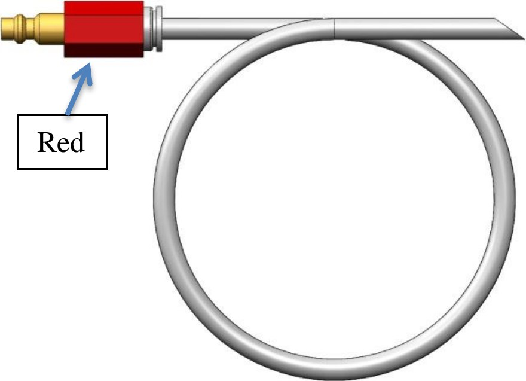
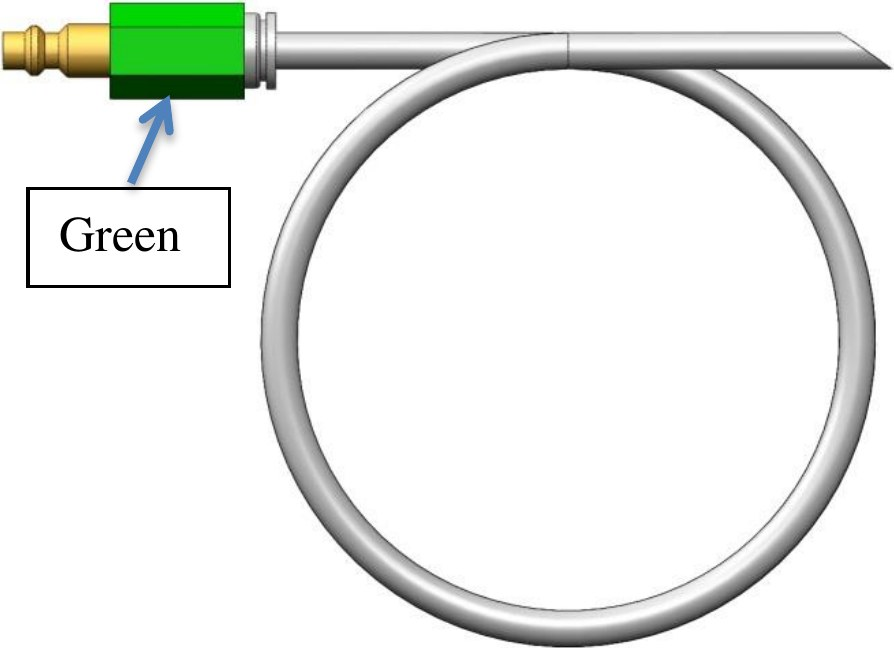
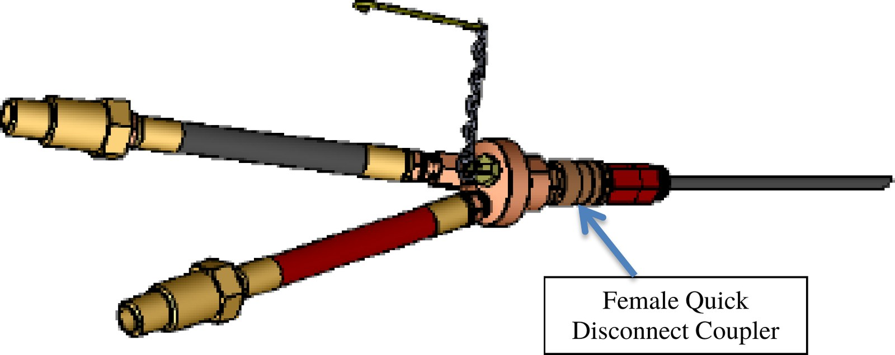
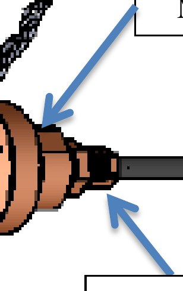

Doc no. MOC-TSB-12-32 // Vol. 12 No. 32 // Jan 1, 2012 // Transmission
Dipstick Service Adapter Changes
Update94777
MOC has made improvements to the Dipstick Service Adapter (Part No. 94777). These changes include 2 new dipstick service hoses in 1/4" and 5/16" that are connected by a quick disconnect fitting and can be switched out to meet the user's needs.
What's new
- Remove the brass fitting from the 3-Way manifold.
- Apply Teflon tape to the Female Quick Disconnect Coupler (Part No. 94561) and connect it to the 3-Way manifold in the same location you removed the original brass fitting.
- The adapter is now ready to be used. When performing a service, select the Dipstick Service Hose you want to use, 94839 or 94841, and connect it to the Female Coupler.
You will also need to request a Software update for the Smart Tech™ ATF Machine from the Equipment Department.
TO UPDATE YOUR EXISTING DIPSTICK SERVICE ADAPTER:
Contact
For more information, contact the Machine & Equipment Department at 866.244.6621.




Part numbers
| Part No. | Description | Notes |
|---|---|---|
| 94561 | Coupler, Female Quick Disconnect, ¼" MPT | Qty 1 |
| 94839 | Hose, Dipstick Service, 1/4" (Red) | Qty 1 |
| 94841 | Hose, Dipstick Service, 5/16" (Green) | Qty 1 |
| 94777 | Dipstick Service Adapter |